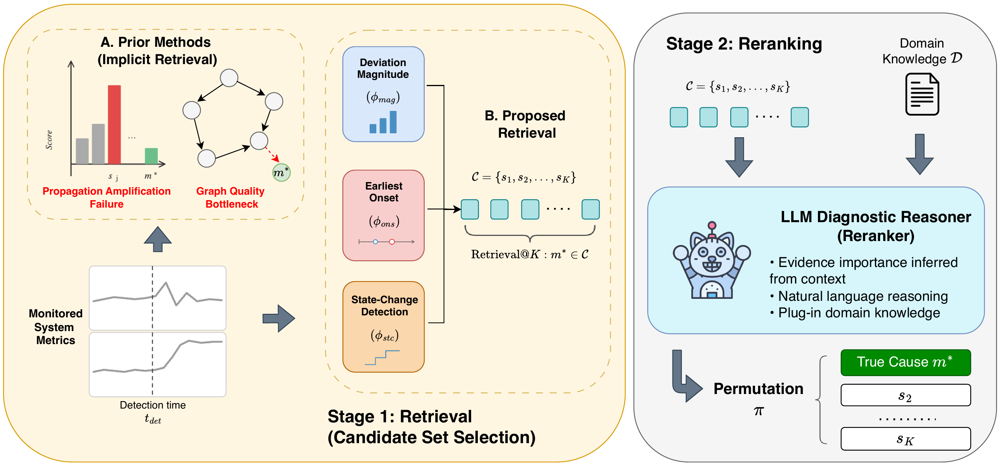

Abstract
Identifying the root cause of an anomaly among hundreds of sensors is critical for preventing safety incidents and costly downtime in complex monitored systems. Existing studies evaluate root cause analysis (RCA) methods using top@k accuracy. We show that this metric has a fundamental blind spot: it conflates two failure modes, retrieval failure, where the true cause is never considered, and reranking failure, where it is considered but ranked too low. In this work, we introduce a retrieval–reranking decomposition and audit four well-known benchmarks to expose this blind spot. Our experiments show that, on benchmarks with complex faults, statistical baselines mis-rank the true cause 79–100% of the time, and graph-based methods never clearly beat the best statistical baseline, whether their causal graphs are learned on short fault windows, on retrieved candidate pools guaranteed to contain the cause, or on multi-day normal-operation data. Meanwhile, on simple benchmarks where faults manifest significantly at their origin, retrieval is nearly solved (98–100%). Guided by the decomposition, we build a two-stage pipeline combining a multi-signal retriever with an LLM reranker that, as one fixed configuration, matches or exceeds the best baseline's top@1 accuracy on all six benchmark suites (by up to +12 points), with no causal graph or labeled data required. When all methods rank the same retrieved candidates with the true cause guaranteed present, adding a short system-description document lets the reranker lead the best baseline by +7 to +18 points on every benchmark.
Retrieval and Reranking
Any RCA method can be read as two steps: choose a set of candidate sensors, then order them. Statistical methods score every sensor, so their candidate set is complete and their errors come from ranking. Graph-based methods only consider the nodes their learned graph links to the anomaly, so a single missing edge can remove the true cause before ranking begins. Measuring the two steps separately shows which part of a method needs work.

Stage 1 builds the candidate set C from three signals. Stage 2 reranks C with an LLM given per-candidate evidence and, optionally, a domain-knowledge document D. The same configuration is used for every dataset, without a causal graph or labeled fault data.
Deviation magnitude
φ_magNormalized shift from the baseline window. Works best when the cause shows the largest change, as in direct faults.
Earliest onset
φ_onsTime of first deviation, earliest first. Captures temporal order when the deviation at the source is small.
State change
φ_stcWhether a discrete sensor leaves its usual state. Aimed at actuator and mode-switch faults, such as a valve forced open.
Findings
On industrial control systems, ranking by deviation magnitude leaves a third or more of true causes outside the top 15.
On microservices the same signal reaches 98–100%. No single extra signal is best on every system, and combining them raises CPS Retrieval@15 to 63–67%.
Retrieval@K for each signal on its own (saturation figure in the appendix). Move the slider to read values. The red line marks K=15, the budget used in all experiments.
Statistical baselines score every sensor but still rank the wrong one first on CPS.
BARO scores every sensor, so it retrieves every cause except two that no sensor measures. Even so, its top@1 on CPS is at most 0.214. Graph-based methods are no better: CIRCA, PageRank and random walk on PC/FCI graphs stay at or below 0.214 top@1 on all CPS benchmarks.
Making graph learning easier does not help either. Graphs fitted on 15-node pools known to contain the cause, and global graphs learned from several days of normal operation, still do not clearly outperform the best statistical baseline. On WADI and SWaT the cause is in the learned graph in 71% and 86% of scenarios, but it is ranked first in at most 21% and 8%.
Each failure mode can be addressed separately, with one configuration for all six suites.
The multi-signal retriever reduces retrieval failures, and the LLM reranker matches or exceeds the best baseline's top@1 on every suite. When the true cause is added to every pool and all nine baselines are re-run on the same candidates, the reranker is never worse than any of them, and with the domain document it beats the best one by 6.7 to 18.1 points on every benchmark (see Results).
Fixed ranking rules do not get there. When the same 15 candidates are reranked by magnitude, onset, state change or a Borda combination, the best rule differs across benchmarks, and the rule that does best on HVAC scores 0.000 on Train Ticket.
Results
top@1 across six benchmark suites
Implications and Limitations
Detection and RCA should be designed together
The anomaly detector determines what the retriever can see. Which signal exposes a fault depends on the system (onset on HVAC, state change on SWaT, magnitude on microservices), and a detector that does not match the system limits accuracy however good the reranker is. Benchmarks made of direct faults overstate retrieval coverage for systems where faults propagate.
Limitations
- The benchmarks with propagating faults are small (14, 36 and 48 scenarios) and only cover water and building systems.
- The CPS gains assume the detection timestamp is accurate to within 5 minutes. An error of ±5 min lowers retrieval by up to 27 points.
- Retriever settings were chosen on the same benchmarks, and the domain document is passed to the reranker as is, without adaptive ingestion.
- The LLM reranker is nondeterministic, so we recommend showing operators a short ranked list with its supporting evidence and keeping a human in the loop.
BibTeX
@inproceedings{muhammad2026where,
title = {Where Root Cause Analysis Fails: A Retrieval-Reranking Decomposition},
author = {Muhammad, Hada Melino and Pham, Luan and Barri{\`e}re, Laure and
Shetty, Sachin and Pulga, Leonardo and Salim, Flora D.},
booktitle = {Advances in Neural Information Processing Systems},
year = {2026},
eprint = {2609.36686},
archivePrefix = {arXiv}
}